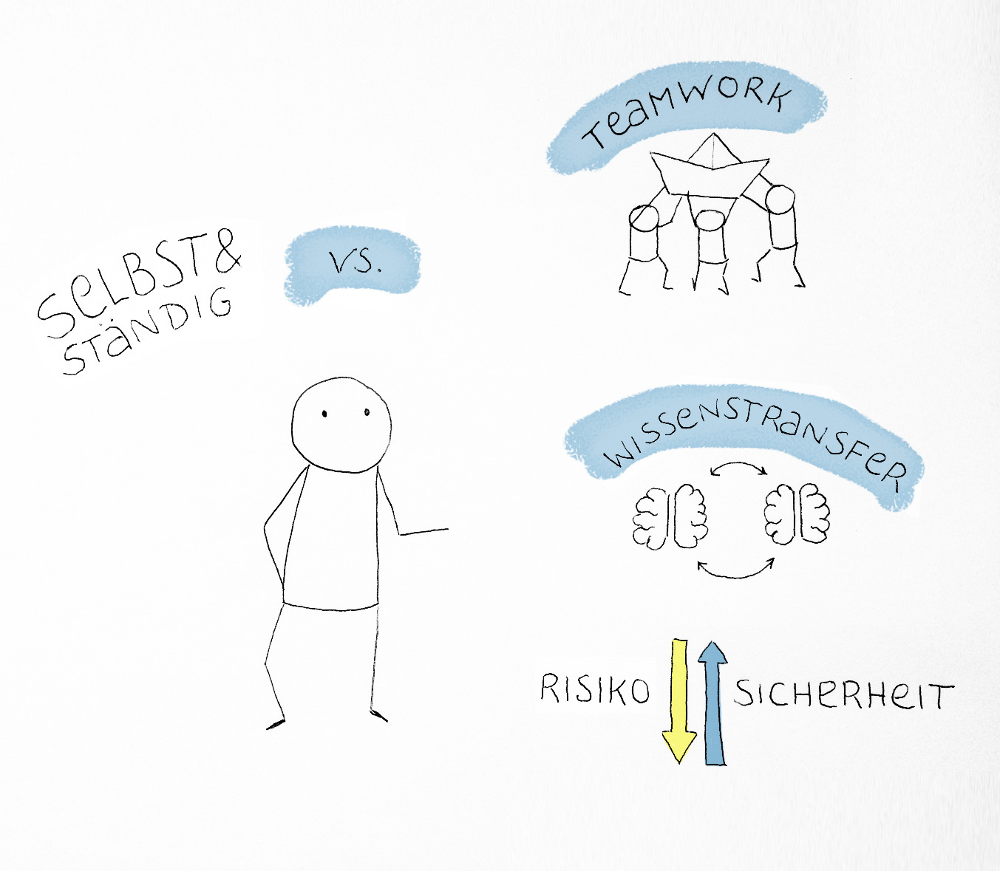
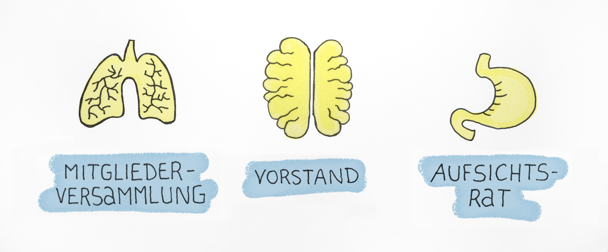
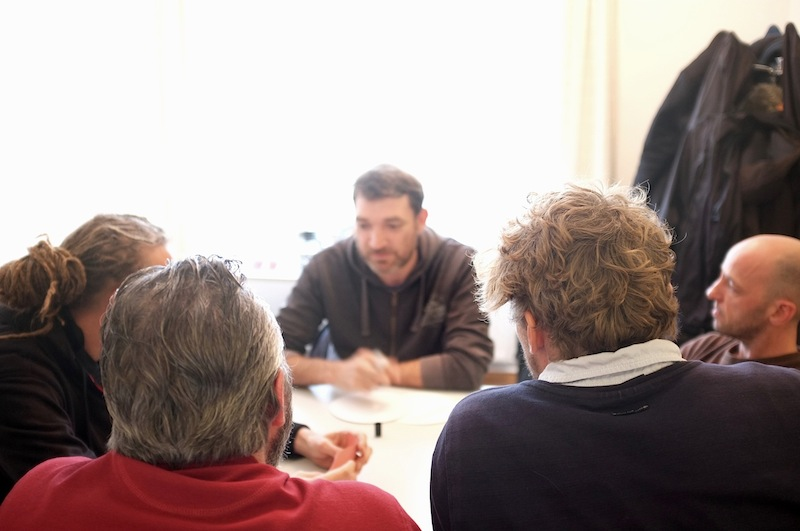
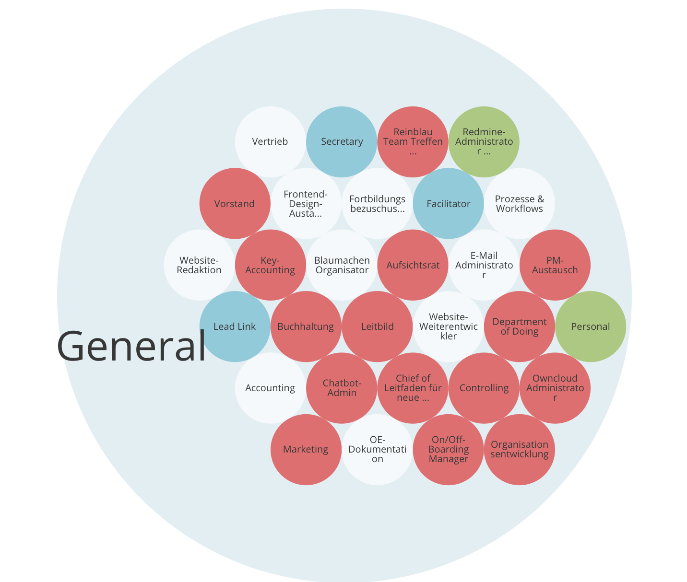

Genossenschaft
als Businessmodell für Freelancer
Luca Curella, Dietmar Gigler & Julia Kliemann | Reinblau eG
Wir sind Dietmar & Luca von Reinblau eG aus Berlin und erzählen von unseren Erfahrungen
bei der Gründung einer Genossenschaft
Wir sind 20 Freelancer, arbeiten an unterschiedlichen Orten, kommen Größtenteils aus der
Drupal Community aber nicht nur…
Verständnisfragen gerne zwischendurch stellen, inhaltliche Fragen oder Diskussion
verlagern wir ans Ende
Wie viele von euch sind Freelancer?
Wie viele von euch sind fest angestellt?
Diese Sesion ist ein Werkstattbericht unserer bisherigen Erfahrungen, Nachahmung empfohlen, uns macht
es jedenfalls Spaß …
Freelancer = Einzelkämpfer?
„Alleskönner“ vs. Spezialisierung
Fortbildungen auf eigene Kosten
Preisdruck, Verantwortung
Persönliches Risiko
Als Freelancer mit eigenen Kunden
Alleine für das ganze Projekt verantwortlich
Risiko durch Subunternehmer
Wartung und Betreuung der Seite alleine
Bestandskunden vs. neue Projekte
„Alleskönner“ vs. Spezialisierung
Als Freelancer für Agenturen
Arbeit im Team, oft spezielle Kenntnisse erforderlich
Andere technische Anforderungen (git, Dev-Umgebung)
Terminliche Flexibilität gefordert
Fortbildungen auf eigene Kosten
Warum kooperieren?

Teamarbeit, Verteilte Rollen, Vertretung möglich
Gegenseitige Fortbildung und Unterstützung
Geringeres persönliches Risiko
Wie kooperieren?
Es gibt verschiedene Rechtsformen, die man sich zur Kooperation vorstellen kann
Die Genossenschaft
Definierter Zweck ist der Nutzen für die Mitglieder
Gleichberechtigte Mitbestimmung für alle Mitglieder
Beschränkte Haftung (bei Ausschluss der Nachschusspflicht)
Passendes Organisationsmodell für eine Community
http://genossenschaftsgruendung.de/was-ist-eine-genossenschaft/
Definierter Zweck ist der Nutzen für die Mitglieder
"In einer guten Genossenschaft ist die Genossenschaft wirtschaftlich solide aber ansonsten arm und das Geld wird an die Mitglieder verteilt." - Zitat von unserem ersten Berater beim Genossenschaftsverband Berlin. Sie stellt keinen Wert an sich dar. Alle kaufen sich mit Genossenschaftsanteilen ein + wenn man austreten möchte bekommt man genau den Anteil wieder…
Gleichberechtigte Mitbestimmung für alle Mitglieder
Jedes Mitglied hat eine Stimme, unabhängig von den eingebrachten Genossenschaftsanteilen.
Beschränkte Haftung (bei Ausschluss der Nachschusspflicht)
Die Genossenschaft haftet im Zweifel nur bis zur Höhe ihres Vermögens. Vermögen der Mitglieder bleibt unangetastet
Passendes Organisationsmodell für eine Community
Durch unsere Erfahrungen in verschiedenen Communities lag es für uns nahe, eine Genossenschaft als Rechtsform zu wählen. Der Ansatz ein Unternehmen gemeinschaftlich zu führen ist schon in der Rechtsform an sich angelegt.
Die Organe der Genossenschaft

Der Vorstand:
Führt die Geschäfte, vertritt die Genossenschaft nach aussen
Der Aufsichtsrat
Überprüft und unterstützt den Vorstand bei der Geschäftsführung, wirkt nach innen, vertritt die Interessen der einzelnen Genossen gegenüber dem Vorstand (nur bei Genos über 20 Mitgliedern).
Die Mitgliederversammlung
Oberstes Organ, jeder hat eine Stimme.
Vorstand + Aufsichtsrat werden gewählt + rückwirkend entlastet.
Es wird zum Jahresabschluss transparent über die Finanzen berichtet + über die Verwendung der Zuschüsse entschieden.
Gründung einer Genossenschaft
Die Satzung
Der Businessplan
Die Prüfung durch den Genossenschaftsverband
Die Eintragung in das Genossenschaftsregister
- Formale Voraussetzungen erfüllen, vergleichbar mit einer GmbH
- Wirtschaftlichkeit wird jährlich vom Verband geprüft, zusätzlich zum Steuerabschluss
Wie arbeiten in einer Genossenschaft?
Die Rechtsform bildet nur den äusseren Rahmen, es stellt sich im Alltag oft die Frage, wie man das im Detail umsetzen will
Wie arbeiten wir?

Agiles arbeiten in Projektteams
Interne Strukturen ebenso agil wie möglich
„Agil“: transparent für alle, im Team entscheiden, Fokus auf: machen, evaluieren, besser machen
Ein Prinzip von Agilität ist das Vertrauen in sich selbst organisierende, gleichberechtigt arbeitende Teams.
In der Realität herrschen in vielen Firmen immer noch Top-Down Strukturen, die Entscheidungsmacht steigt mit der Position innerhalb der Firmenhierarchie
Wir wollen das anders machen, an etlichen Stellen gibt es noch Fragezeichen.
Ausserdem sind wir alle auch in Projekte eingebunden und hatten das Gefühl so nebenbei lässt sich das nicht entwickeln
Im Sommer für externe Beratung entschieden, was uns schon extrem voran gebracht hat und was wir nur empfehlen können
Selbstorganisierte Strukturen entwickeln
Mit externer Beratung Self-Management einführen
Tools und Methoden lernen für Workshops und Meetings
z. B. agiles Denken, User Story Mapping etc. in interne Prozesse einbeziehen, intern durchgeführte Workshops und Methoden bereichern wiederum Kundenprojekte (Methodenkoffer)
Themen und Ansätze aus unseren Kundenprojekten (agiles Denken, User Story Mapping etc.) in interne Prozesse einbeziehen,
Intern durchgeführte Workshops und Methoden bereichern wiederum Kundenprojekte (Methodenkoffer)
Transparente Rollen und Aufgaben entwickeln
https://glassfrog.holacracy.org/
Aktuell haben wir uns für die Methode Holacracy entschieden, um unsere Strukturen effektiver zu machen. Statt von oben nach unten ist die Organisation in Kreisen gedacht, die miteinander verlinkt sind und sich letztlich in einem äusseren Kreis wieder finden. Alle Rollen + Kreise haben einen transparent definierten Zweck, der Grundlage der verschiedenen Entscheidungen ist. Und sie haben vorher definierte Verantwortlichkeiten + Aufgaben.
Wir gehen davon aus, dass viele Spannungen in Firmen durch unterschiedliche Erwartungen an Aufgaben/ Rollen entstehen. Holacracy ist auch eine Art Erwartungsmanagement - je klarer man sich über die einzelnen Rollen verständigt und sie transparent beschreibt, desto weniger Spannungen kommen dadurch auf, bzw. aufkommende Spannungen werden bei Holacracy produktiv gemacht. Es gibt eigene Meetings in denen die Strukturen besprochen werden, die sind vom Tagesgeschäft getrennt.
Entscheidungsfindung
Mitsprache ermöglichen und trotzdem schnelle Entscheidungen treffen können
Auch dafür bietet Holacracy Techniken. Wie man entscheidet, Meetings abhält, usw…
Wir werden weiter berichten, ansonsten ist das genügend Material für eine eigene Session…
Kreativität statt Kontrolle fördern
In vielen Firmen wird die Kreativität der Mitarbeiter abgewürgt, weil darüber eine Management Ebene sitzt die losgelöst ihre Entscheidungen trifft. Oftmals wird dabei wirtschaftlich argumentiert…
Es gibt aber immer mehr Firmen, die wirtschaftlich erfolgreich sind und gleichzeitig Kreativität fördern. Die eine andere Arbeitskultur hinbekommen…
Die Grundlage ist hier: Vertrauen dass die Initiative aller Mitarbeiter wertvoll ist und alle in der Lage sind, Entscheidungen zu treffen.
Gegenargument ist in der Regel: Wenn alle alles entscheiden, dann herrschen Chaos und Anarchie. Wie soll das gehen? Die Antwort ist: Ja das geht, und es ist keinesfalls chaotisch. Es gibt sehr klar definierte Methoden und die probieren wir gerade aus…
Feiern
Danke!
Fragen
Wo kann man sich bewerben? Seid ihr offen für neue?
Grundsätzlich lebt eine Community natürlich auch davon, dass sie wächst. Sonst wäre es eher ein Club… Allerdings sind uns die Prinzipien und das Verständnis der Zusammenarbeit wichtiger als viele Mitglieder zu haben. Wir garantieren auch keine Aufträge + Voraussetzung ist ein hohes Mass an Selbstorganisation. Das probieren wir erst praktisch aus und dann sieht man weiter.